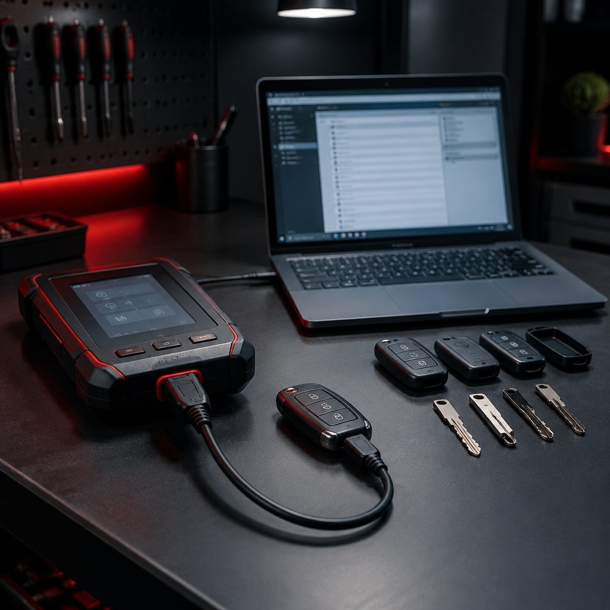

Как проходит работа
Пять шагов от звонка до готового ключа. Большую часть вопросов решаем по телефону ещё до приезда, чтобы вы не ехали зря.
Пять шагов
Ничего сложного: главное — заранее назвать модель и год, чтобы мастер подготовил нужный корпус и чип.
1. Звонок или сообщение
Скажите марку, модель, год и что нужно: второй ключ, ключ при утере, привязка купленного, ремонт.
2. Проверка по модели
Уточняем тип ключа и систему иммобилайзера по VIN. Если нужного корпуса нет — называем срок.
3. Изготовление
Режем лезвие по замку, собираем ключ: корпус, плата, чип. Проверяем механику до привязки.
4. Привязка к авто
Прописываем ключ в иммобилайзер через разъём. Проверяем запуск, центральный замок и багажник.
5. Проверка и гарантия
Проверяете сами: открыть, закрыть, завести. Даём гарантию на изготовление и привязку.
Что взять с собой
Автомобиль должен быть на месте: ключ привязывается к конкретной машине, а не «вообще».
Автомобиль
Для привязки нужен доступ к разъёму и рабочая бортовая сеть. По части моделей привязка возможна без запуска двигателя — предупредите заранее.
Документы
Свидетельство о регистрации и паспорт: подтверждаем, что ключ делается владельцу или по его поручению.
Все ключи
Возьмите все имеющиеся ключи: по ним проще привязать новый и проверить, не осталось ли в памяти утерянного.
Сроки и стоимость
Конкретную цену называем до начала работы. Она зависит от типа ключа и системы привязки, а не от «сложности клиента».
Второй ключ, обычный
Выкидной или ключ с кнопками для распространённых моделей, при наличии корпуса и чипа.
Смарт-ключ
Бесключевой доступ: дороже обычного из-за платы и привязки, срок обычно дольше.
Ключ при утере
Изготовление с нуля и привязка, при необходимости удаление утерянного ключа из памяти.
Ремонт ключа
Корпус, кнопки, лезвие, аккумулятор, чистка платы. Часть работ — пока вы ждёте.
Про запись и приезд
Работаем по записи: так вы не ждёте в очереди, а мастер готовит нужный ключ заранее.
Да, лучше позвонить заранее: под вашу модель готовится корпус и чип, а на привязку выделяется время.
Сморгонь, Заводская улица, 59. Ориентир — промышленная часть города; скажем по телефону, как удобнее подъехать.
На ремонт ключа — да, если не требуется привязка. Для изготовления нового ключа с привязкой нужен автомобиль.
Уточняйте по телефону: график зависит от загрузки, по записи подстроимся.
Проверяем до оплаты: если ключ не работает, работу не отдаём и деньги не берём.
Запишитесь на удобное время
Позвоните или напишите в WhatsApp: назовите модель, год и что нужно — договоримся о времени.